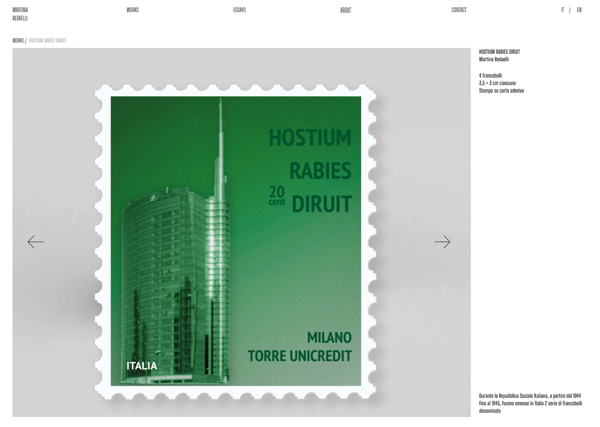

Lavori
Figma
HTML·CSS·JS
-
Studio di tatuaggi
Save Tattoo
UI/UX, Development, Branding
2026
vedi progetto →

- Sito per un'artista Martina Redaelli Art Direction, UI/UX, Development 2026 vedi progetto →
- Concept di rebrand Letterboxd Branding, UI Design 2026 vedi progetto →
- Esperimento in codice [nome gioco] Development, Creative Coding 2026 vedi progetto →